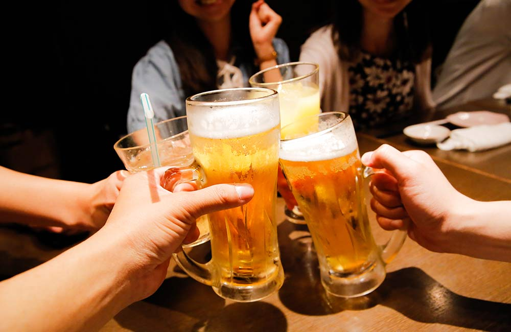
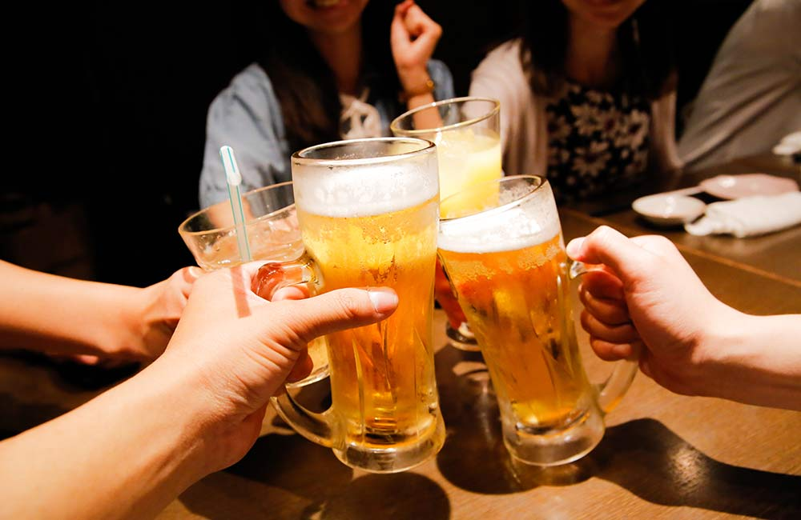

FACTS TO KNOW:
1. Over a third of Goa is covered by forest.
2.There are almost 7,000 bars to choose from.
3. The state has the highest per capita income in India.
4.It's home to India's only legitimate two-wheeler taxis.
5.Goa celebrates two independence days.
6.Over 400 species of birds have made Goa their home.
7.Goa has one of India's largest waterfalls.
8.Goa is home to India's first printing press and medical school.
9.Goan people can apply and avail Portuguese passport along with the India's one. you can have a dual passport.
10.Goa offers Asia's first lauch floating casino at panaji

2.There are almost 7,000 bars to choose from.
3. The state has the highest per capita income in India.
4.It's home to India's only legitimate two-wheeler taxis.
5.Goa celebrates two independence days.
6.Over 400 species of birds have made Goa their home.
7.Goa has one of India's largest waterfalls.
8.Goa is home to India's first printing press and medical school.
9.Goan people can apply and avail Portuguese passport along with the India's one. you can have a dual passport.
10.Goa offers Asia's first lauch floating casino at panaji

FAMOUS FOR:
2.Carnival
3.Festive Atmosphere in December
4.Cashew nuts, feni and goa sausage
5.Headphone Parties
6.Casinos
7.Bike Rentals
8.Churches & Old Goa
9.Shopping in Anjuna
10.And more …..


GOA ALSO KNOWN AS :
2. Gopakapattana
3.Gopakapattam
4.Gopakapuri
5. Govapuri
6. Govem
7.Gomantak